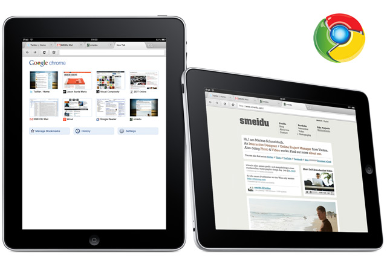
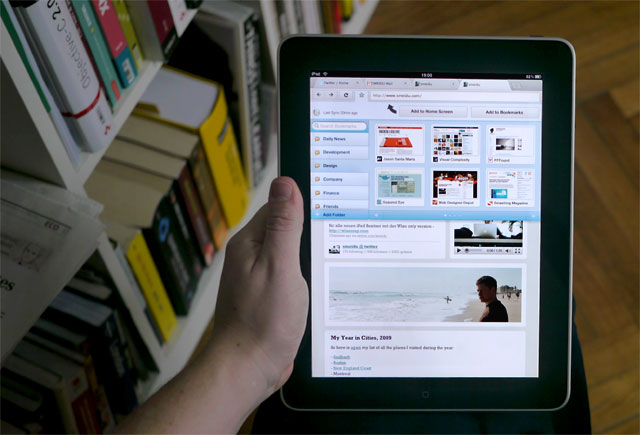

Google Chrome for iPad. Interface Design Mockup.
Back in 2010 I envisioned how a Google chrome browser could look like on the iPad platform. I created a Interface Design Mockup, which generated lots of feedback from the interwebs. 2 years later in 2012 Google then released their browser as iPad app.
My design & product proposal in 2010:
Despite the App craziness I strongly believe in the ‘Browser’ as the killer feature for the future of mobile devices (iPhone, iPad, Android & Co). Apple did a wonderful job with Mobile-Safari to provide the first complete mobile browsing experience on a mobile device and clearly set the benchmark since then. Mobile-Safari for the iPad is good, but not yet great. There is clearly space for innovation and one of the most important features for the iPad/iPhone OS would be the option to choose between different browser.
It’s obvious that Chrome for iPad is not realistic right now due to Appstore policies and limitations in regard to custom Javascript engines that without Chrome doesn’t makes sense at all, but I really hope that Google, Mozilla and Opera keeps pushing Apple to open the iPad/iPhone OS for alternative browser as I write this.
Real Tab Browsing
‘Bringing back the old school Tab’! Tab Browsing on mobile Browser is mostly missing right now. Only Opera did a good job with Opera for iPhone and the iPad really needs a browser with real tab browsing. I know that there are technical limitations, for example the RAM, yet I would prefer four real browser tabs in the browser bar instead of nine Safari windows to choose from the menu.
It is clearly important to provide enough space for finger navigation between the tabs and buttons. The height of this ‘Chome for iPad’ bar is only 20px higher than on Safari.
Bookmarks
The current bookmark handling in Chrome for Mac/PC isn’t perfect from my point of view, though I really love the Chrome bookmark sync feature between different computers. On Mobile-Safari – the ’save bookmark on HomeScreen’ is a great feature, which opens the door for WebApps to compete with native apps. So for my perfect iPad browser I would love to see the synchronize feature between different devices, the option to save bookmarks within the browser or on the iPad homescreen and a rich experience in browsing through my bookmarks, which is another point of failure of the current Safari for iPad.
Gestures
Another important aspect for the next generation of mobile browsers will be “finger gestures”. If user could handle the basic browser functions with fast finger gestures, the browsing experience would be much smoother. There are some cool new gestures within the iPad like the Photo App gestures. I wish for Apple to define some standard guidelines for advanced gestures by adopting similar mouse gestures which are already known from plugins for firefox & chrome.
iPad + Chrome ‘OS’. Best of both world?
The greatest thing about Google Chrome for iPad would be the combination of the two platforms. On the one hand the shiny iPad Hardware with the well-engineered OS and zillions of well-designed native Apps and on the other hand the Chrome Browser with the best-of ‘chrome OS’ features (WebApp Store, Google Apps, Extensions, …). Wouldn’t that be a promising future, where both companies and platforms could co-exists side by side?
I would love to hear your feedback!

Date: 2010
Project by: Markus Schmeiduch, non commercial
My Work: Interface design for an hypothetical Chrome browser on the iPad platform. Defining the touch based UI interactions.
Feedback: My concept gots lots of atentation from the Apple & Google community. Even was featured on techcrunch & Co.
{kind=link}
{kind=link}